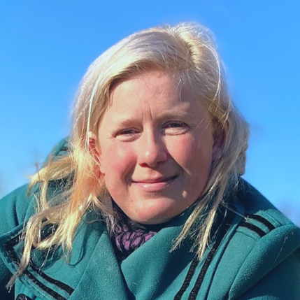

Stine
- Alder: 33 år
- Yndlingskage: Banoffee Pie
- Andet: Mit speciale er fyldt chokolade!
Kageånd blev skabt med et ønske om at dele vores passion for kage.
Ingen af os lever af at lave kage, men det fylder alligevel en del i vores hverdag.
Vi finder inspiration fra alle verdenshjørner da vi tror på, at alle kulturer kan byde på noget smukt og samtidig kan udfordre vores smagssanser og give unikke smagsoplevelser.
Send os endelig en mail hvis du har idé til en kage, som du tror kan inspirere andres bageoplevelser!